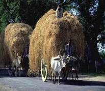

Prashant Nair describes the sights, sounds and flavours he came across during his trip to Kerala.
The First thing I saw when I woke up was the white ceiling with the fan spinning at high speeds, creating a cool breeze throughout the room. For the first few moments I felt completely disorientated, as I struggled to gain my bearings. After all, having travelled more than 10,000 miles in the first week of our vacation, I had a perfectly sound reason for feeling disorientated. Outside the room, I could hear conversation, as to the programme for the day. Pulling myself out of the bed I walked out of the room, my feet adjusting to the cold, stone floor. As I stepped out of the room family greeted me from all sides, inquiring whether I had a pleasant night's sleep. I replied and took a look outside at the beautiful morning. I took a walk in the compound, listening to the birds and the sounds of people at work. There was the frequent sound of scooters and autos along the road. From my point in the compound I could see people going to work, dressed for work in the fields and carrying their tiffin (lunch) boxes. Further up the sheet the sound of the newspaper man was heard. Up in the tall palm tees, birds screeched and in the sheds the cattle mooed. As I heard these sounds I compared it to the relatively calm morning of North London

As I finished my morning rituals of exercise and other duties I seated myself at the table and was served a cup of tea. Now, whilst I was in India I never got used to the different taste Indian tea has from English tea. I'm not sure what causes the difference in taste but I thought it worth mentioning. As soon as I finished my tea a plate of steaming hot idlis and chutney was placed in front of me. In India I could not get used to the heavy food that they served for breakfast. Back in London I would be eating a light bowl of cereal before starting off for school. I was constantly told that I needed to put on more fat, which sounded absurd to me, since I never been able to eat a lot of food. But all the same I managed to eat all that was given to me.
After breakfast I decided to accompany my parents on a trip into Palakkad. After I had dressed and we had all got ready we set off. We walked the five minutes to the bus stop and we waited until we saw the large bus approaching in the distance. Even from the distance we were standing at we could see that it was crowded with people. But, we had no other option. To wait for another bus would have taken too much time so we had to make do with the approaching bus. As it slowed down the doors swung open and we had to literally jump on to the bus. My mother and sister went to sit up at the front, whilst my father and I were forced to stand at the back of the bus. The heat from all the other bodies was incredible. It was also a slightly unnerving feeling to have someone else breathe down the back of your T-shirt. But standing in the cramped space at the back of the bus was the way we were forced to travel.
Looking out of the window we could mostly see green paddy fields, only a week to go before harvesting began. When we entered the city though, it was a different sight altogether. We saw dirty white buildings and the traffic began to build up. Soon we were caught in slow moving traffic. I watched as the scooters and motor bikes around us started riding over the pavements, in order to get past the congestion. Soon we reached the bus depot. There were plenty of buses there and with so many buses it was some time before the bus found a space to park. As I emerged from the bus I was hit by the smell of petrol, diesel, exhaust and urine. It hung in the air and so we hurried away from the depot. As we walked along the main road, I took an interest in the number of stalls there were. Wherever there was a free space someone had set up shop, selling a whole range from fake designer goods to counterfeit audio cassettes and cheap slippers. I was interested because I could immediately see that 95% of the designer goods being sold, (may be 50 rupees extra just for the label) were fake. I reminded my sister of it and gave her instructions not to be lured into thinking that they were good quality goods. When we went into the shops I was interested in the price exchange, always asking “how much would that be in pounds?” I was amazed at the cheap prices and I used it to buy essentials for at least a tenth of the price.
On the whole, I preferred spending time with my cousins rather than go shopping because it got slightly boring after a while. I abhorred the smell that you always find in the city, (a mixture of diesel amongst other things) and didn't believe the amount of smoke that came out of large vehicles. Occasionally lorries would pass our house, smoke coming from the exhaust that it blackened the air, sometimes carrying workers from the fields, but you would still smell the diesel in the air twenty minutes later. I found this quite incredible and now saw the reason why so many Indians were developing asthma. Once every day I would hear the election broadcasts, coming from giant speakers on the hacks of cars or vans. Sometimes the whole party manifesto would be heard before the voices disappeared along with the van into the distance. I thought this was quite a clever way of broadcasting since not every Indian household had a TV.
I was also quite surprised when I saw the goats, cows and dogs roaming the streets. My cousins and I would often scare off the dogs by throwing stones and shouting. We would often pass the day playing cricket, striking fours and sixes before it got too dark to see the ball. We would spend the nights playing chess, by the light of the lamps. Power cuts were a daily routine. They would always turn off in the evenings for half an hour before coming back on again.
It would also go during the day, unpredictably all the lights, fans, TV and other electrical goods would turn off and sometimes stay off for up to an hour. These were the things that we had to contend with. Some days it would rain all day, forcing us to stay inside and there was many a cricket match we had to call off due to the rain. On days like these the most I could do was read some of the books I had brought with me or some article or the other about the latest happenings in Kashmir and Kargil or some other current affair. On days like these the TV was a great aid to help pass the time away. It was always interesting to see what kind of programme Doordarshan or Surya TV had lined up.
Unfortunately we didn't have satellite, otherwise we'd have been constantly watching the music and the cartoon channels. It was also nice for the whole family to sit down together and watch things like films the eclipse, Onam day celebrations and Independence Day celebrations. Independence Day was something I will probably remember for the rest of my life. Seeing the people dancing in the streets at midnight, the banners of green, white and orange. Seeing school children with their little flags. All these things will stay with me.
There were also bad things such as the beggars we saw in the streets. They would look at us and ask for money. I had to learn to block them out and get on with my life. I felt this way because if you gave to one you felt you had to give to another and so on until you were out of money. The snakes, mosquitoes, spiders and ants all bothered me. I didn't like going near the haystack because of the warnings of my cousin who told me about snakes living near them. I felt mosquitoes were a constant pain, day and night, and whenever I had to go to the city I tried to wear trousers and full-sleeved things, to avoid being bitten. Ants were a veritable plague and they managed to get everywhere. Even in the suitcases, which were kept shut for most of the time. The roads were pot-holed and we always had a bumpy ride, wherever we were going. The climate didn’t have a very good affect on my skin. And last but not least, we stuck out in the crowd. Whenever we went into the city or other crowded places people always stared at us.
Despite all these bad things in India, there is a certain something that makes our whole journey worthwhile. I have many of my cousins there and I hate to leave them. Still there is an undefinable quality that makes India the place where my heart will always seek to go, wherever I am.